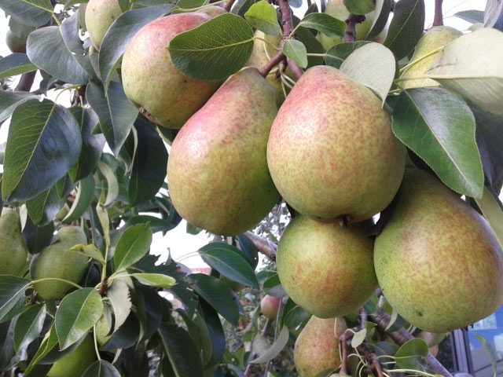
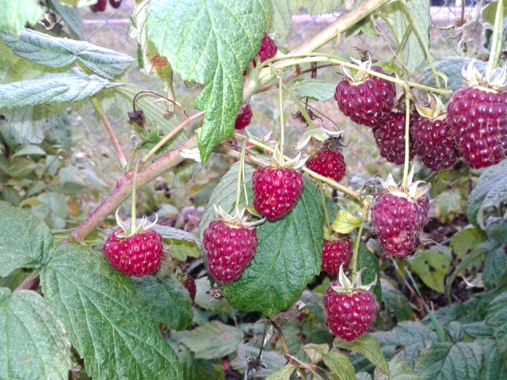
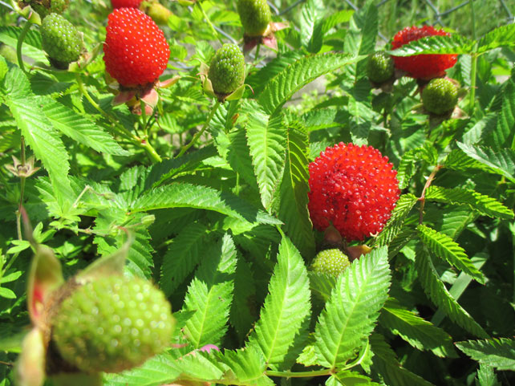
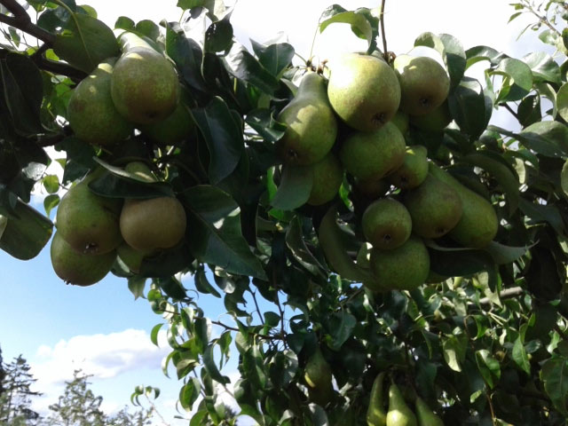
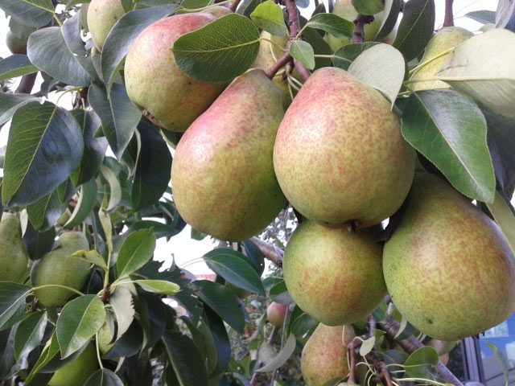
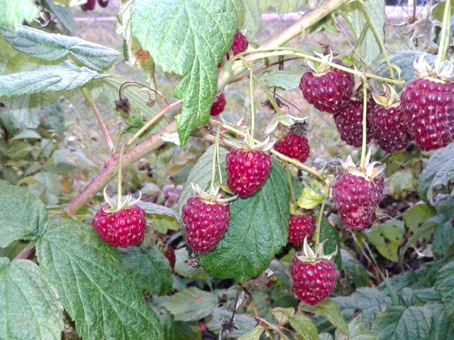
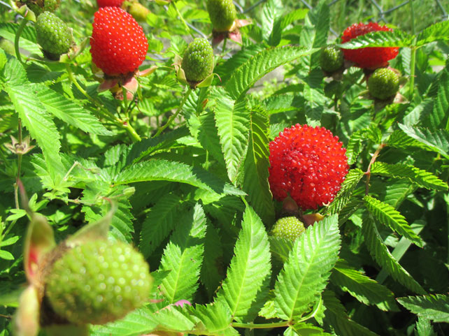
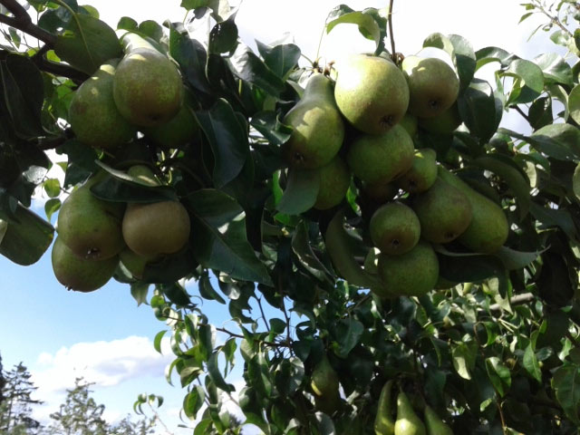

Zakładanie i projektowanie ogrodów
Posiadamy kilkunastoletnie doświadczenie w projektowaniu, aranżacji, odnowie i zakładaniu ogrodów. Oferujemy Państwu kompleksowe usługi z tym związane - od projektu który uzgodnimy z Państwem, po przygotowanie terenu, aż po wykonanie. Projektując ogród dokładamy wszelkich starań aby przede wszystkim spełnił on Państwa oczekiwania. Doradzimy jakie rośliny, kwiaty i drzewka najlepiej będą komponowały się z otaczającym terenem, oraz pozwolą uzyskać pożądany efekt. Wspólnie przygotujemy plan zagospodarowania wolnej przestrzeni, a następnie zabierzemy się do jego realizacji. Zapraszamy do kontaktu!


Pielęgnacja ogrodów i terenów zieleni
Piękny ogród to marzenie każdego kto posiada choć trochę wolnej przestrzeni, czy własny dom z działka. Niezależnie od tego czy lubimy kolorowe rabaty kwiatowe, nieduży sad z drzewkami owocowymi, czy po prostu marzy nam się piękny, zielony trawnik - pielęgnacja ogrodu, czy terenów zielonych niesie ze sobą spory nakład pracy. Pomijając sam czas dużym wyzwanie jest także odpowiednie zaplecze techniczne wymagane praktycznie przy każdym ogrodzie. Łopaty, widły, taczka, grabie, piły, kosiarki, kosy, itp., itd. Nie każdy z nas ma na to miejsce jak również nie każdy z nas potrafi się posługiwać chociażby piłą. Pomijając olbrzymi koszt jaki wiąże się z zakupem podstawowych narzędzie, czasami warto rozważyć powierzenie opieki nad ogrodem zewnętrznej firmie.


Sprzedaż sezonowa
Właściwie dobrana gleba i regularnie podawany nawóz to klucz to sukcesu w ogrodnictwie.
Proponujemy Państwu sprzedaż bazy do opieki nad Państwa ogrodem.
Od wczesnej wiosny posiadamy duży wybór roślin balkonowych, a jesienią i wiosną pełny asortyment drzew i krzewów owocowych, jak również:
- ziemia ogrodowa
- kora
- nawozy
- kwiaty rabatowe
- chryzantemy
 








Cięcie i podcinanie drzew
W każdym ogrodzie przychodzi taka pora roku w której należy zadbać o odpowiednie przycięcie drzewek i krzewów. Niepielęgnowane drzewa rosną w sposób niekontrolowany co w przypadku drzew owocowych ma olbrzymi wpływ na ich plony. Drzewa i krzewy ozdobne także wymagają odpowiedniego cięcia, w przeciwnym razie rozrosną się a cały urok ogrodu zostanie przysłonięty. Wiedza na temat odpowiedniego cięcia jest niezwykle istotna jeżeli chcemy zachować estetyczny wygląd oraz cieszyć się własnymi owocami. Odpowiednie przycięcie drzew pozwala zwiększyć kilkukrotnie zbierane owoce. Posiadamy niezbędny sprzęt, umiejętności i wiedzę, aby odpowiednio przygotować ogród do sezony.


Fachowe porady
Zawsze doradzamy jak pielęgnować rośliny oraz rzetelnie informujemy o ich wymaganiach. Zdobyta wieloletnią praktyką wiedza chętnie wykorzystywana jest przez naszych klientów. Służymy naszą radą w pielęgnacji roślin w istniejących ogrodach, modernizacji posesji, czy zakładaniu nowych ogrodów.